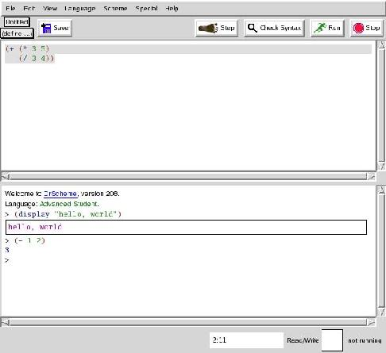
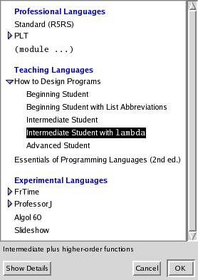
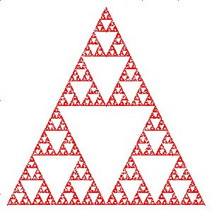
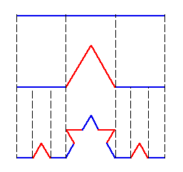
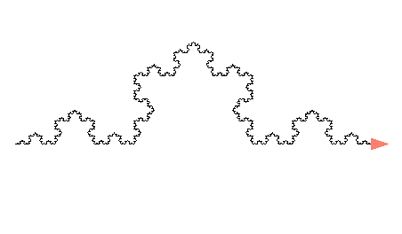

Learning to Program with DrScheme
By Pramode C.E.
The ideal programming language for beginners should offer the minimum barrier between thought processes and their concrete implementation as programs on the machine. It should not be a ‘toy’ language - its structure should be rich enough to express complex computer science concepts without being awkward. The language should encourage good coding habits and students should be able to look at it as an extension of the three things which they have already mastered to varying levels of proficiency - reading, writing and mathematics. Do we have such languages? Yes - the programming language Scheme fits in admirably.
DrScheme is a superbly designed programming environment for a family of implementations of the Scheme programming language. Combined with a great, freely available textbook, How To Design Programs which lays emphasis on the program design process rather than on finer algorithmic/syntactical details, DrScheme is bringing about a revolution in the way elementary computer programming is taught to school/college students. The objective of this article is to provide a quick introduction to the fascinating DrScheme environment as well as the Scheme programming language; it would be great if some of the teachers who might be reading this get sufficiently motivated to give DrScheme a try in their classes!
What Ails ‘Conventional’ Programming Languages?
Why Yet Another Language, you might ask. Why not just teach the kids one of C/C++/Java, the three most popular programming languages?
I have been teaching introductory classes in computer programming using C for the past many years. Most of my time is spent on teaching the intricacies of the language's low level syntax, especially pointer handling, memory allocation/deallocation etc. But isn't this an essential part of the profession of programming - are we not supposed to understand how things work deep down? Yes - but there are two problems here:
- The objective of an introductory programming curriculum should be to give the students a firm foundation in the art of problem solving; the more time we dedicate to teaching syntax, the less time we have to teach strategies (How To Design Programs calls them ‘recipes’) for problem solving. Think of a person who has mastered the whole of English grammar but is incapable of writing even a two-page essay!
- Computer Programming can be thought of as a purely intellectual activity divorced from any real computer hardware. The skills in reasoning and systematic thought acquired through a study of programming can be easily transferred to many other domains which are not directly connected with computers or computing. People who are not going to become professional programmers don't gain anything by understanding implementation details at the expense of acquiring good design skills.
Getting Started with DrScheme
Precompiled binaries of DrScheme can be downloaded from the project home page. The executable is called ‘drscheme’. Here is a snapshot of the integrated development environment which includes an editor, an interactive interpreter prompt and a ‘stepper’ for visualizing the evaluation of Scheme expressions.

The work area is divided into two parts - the upper part is the editor and the lower part, the interactive interpreter prompt. Short code segments can be typed directly at the interpreter prompt and get evaluated immediately. Longer programs can be written in the editor window and executed by hitting the ‘run’ button.
Parentheses, Parentheses Everywhere
Here are two simple Scheme expressions:
(+ 1 2) (+ (* 2 3) (* 4 5))which evaluates to 3 and 26 respectively. What one notices immediately is the use (or abuse, as some might say) of parentheses as well as the unusual prefix notation. Both have their own logic. In a conventional language like C, a function call looks like this:
fun(1, 2);This is prefix notation (‘fun’ comes before the operands). But operators work in an infix manner:
1 + 2Scheme doesn't differentiate between operators and functions - operators too are functions and both are applied in a similar way; in uniform prefix style. Sacrificing ‘conventions’ to get a highly regular structure isn't too bad an idea.
The DrScheme editor performs parenthesis matching automatically; so you need not spend time trying to do it by hand.
A DrScheme program is composed of a set of Scheme expressions - the form of an expression can be captured concisely as:
(action arg1 arg2 arg3 ... argn)What if we type:
(1)at the interpreter prompt? DrScheme generates an error message:
procedure application: expected procedure, given 1 (no arguments)The designers have taken special care to make the error messages simple and meaningful.
Everything (or Almost Everything) is a Function!
In Scheme, all computations are done via the application of functions. Defining a function is very simple:
(define (my-sqr x) (* x x))The function can be called like this:
(my-sqr 3)The ‘everything as function’ point of view simplifies things a great deal. Here is how we write an if statement in Scheme:
(define a 1) (define b 2) (if (< a b) (+ 1 2) 5)The general format of an ‘if’ statement is:
(if expr1 expr2 expr3)You might think of ‘if’ as some kind of special function which takes three expressions as arguments, evaluates the first expression and evaluates the second expression only if the first one is true; otherwise the third expression is evaluated. The value of the expression is returned.
A Model for Expression Evaluation
Here is how we write the famous factorial function as a Scheme program:
(define (fact n)
(if (= n 0)
1
(* n (fact (- n 1)))))
It's essential that students get a feel of how the expression, say,
(fact 3)is evaluated by the interpreter. One of the advantages of the ‘functional’ approach adopted by Scheme is that most evaluations can be modeled as simple substitutions. Thus, the interpreter would, in the first step, substitute (fact 3) with:
(* 3 (fact 2))Here is how the process of substitution proceeds further:
(* 3 (* 2 (fact 1))) (* 3 (* 2 (* 1 (fact 0)))) (* 3 (* 2 (* 1 1))) (* 3 (* 2 1)) (* 3 2) 6An interesting feature of the DrScheme environment is a ‘stepper’ which helps you visualize this evaluation process. Here is a snapshot of the stepper in action:

Note that we are presenting recursion as something quite natural: contrast this with the way we introduce it in ‘conventional’ languages - as something magical and mysterious!
Language ‘Levels’
We have seen the use of the ‘define’ keyword to bind values to names. Let's try the following experiment:
(define a 10) (define a (- a 1))we are trying to write the Scheme equivalent for the C statements:
a = 10; a = a - 1;We note that Scheme is giving us an error message:
define: cannot redefine name: bSo, ‘define’ is not the same as the classical assignment operator! In fact, we use a different operator to do assignment, ‘set!’. Let's try:
(define a 10) (set! a (- a 1))You might either get a syntax error or you will see that set! has the desired effect. The behaviour depends on the current language ‘level’ which you have chosen. Hit Alt-L and a window pops up:

You see that the language level currently in effect is ‘Intermediate student with lambda’. Each ‘level’ exposes the student to a part of Scheme. Because assignment is a complex operation, it becomes available only when you choose the ‘advanced student’ level. The obvious question now is:
Why is Assignment an ‘Advanced’ Operation?
Let's think of the factorial function expressed as a C routine:
int fact(int n)
{
int f = 1;
while(n != 0) {
f = f * n;
n = n - 1;
}
return f;
}
what if we interchange the two statements within the body of
‘while’ loop? We get a serious error - the function now
returns 0 for all values of ‘n’ other than 0.
The assignment operator introduces complex ordering dependencies between statements in our program. A beginner will have to spend considerable time and effort before he purges all ‘ordering bugs’ out of his code. In a ‘pure functional’ style of coding where we do not make use of assignment, such bugs do not occur. It so happens that a lot of very interesting programs can be constructed without using assignment. There are also plenty of programs (mostly modelling real-life entities like say a bank account) which can be built only by using explicit assignment. An intelligent teaching strategy is to first let the students gain enough experience writing ‘pure-functional’ code and then introduce assignment as an advanced operation.
Higher Order Functions, Lambda and Closures
Functions are first class objects in Scheme - they can be stored in variables, passed to and returned from other functions.
(define a +) (a 1 2) ; evaluates to 3 (define (my-sqr x) (* x x)) (define (foo f x) (f x)) (foo my-sqr 3) ; evaluates to 9It's possible to create functions ‘on-the-fly’ using ‘lambda’:
(define (foo f x) (f x)) (foo (lambda (x) (* x x)) 3) ; evaluates to 9The general format of ‘lambda’ is:
(lambda (arg1 arg2 .... argn) expression)It generates an ‘anonymous’ function which accepts ‘n’ arguments and whose body evaluates to the value of ‘expression’.
Look at the code below:
(define (add x)
(lambda (y) (+ x y)))
(define f (add 1))
(f 2)
The function ‘add’ returns a function; in the body of
this function, the value of ‘x’ would be the value it
had at the point when the function was created. Such functions in
which certain variables have values ‘captured’ from the
environment which existed during the creation of the function are
called ‘closures’.
Closures and higher order functions provide tremendous expressive power to the language; the computer science classic Structure and Interpretation of Computer Programs has a thorough discussion of this topic.
Defining Local Variables
Let's define a function ‘fun’:
(define (fun x y)
(let ((p (+ x y))
(q (- x y)))
(* p q)))
(fun 2 3) ; evaluates to -5
The general syntax of ‘let’ is:
(let ( (var1 exprn1) (var2 exprn2) ... (varn exprn) ) body)In the body of ‘let’, var1, var2 etc will be assigned the values obtained by evaluating exprn1, exprn2 etc. These bindings are ‘local’ in the sense they vanish once the evaluation of the body of ‘let’ is over.
Creating Compound Data with ‘Structures’
Using structures is extremely simple in Scheme:
(define-struct point (x y)) (define p (make-point 1 2)) (point-x p) ; evaluates to 1 (point-y p) ; evaluates to 2True to the functional nature of the language, the ‘define-struct’ keyword does nothing more than constructing three functions on-the-fly; a ‘constructor’ function called ‘make-point’ which builds an object of type ‘point’ and two ‘accessor’ functions ‘point-x’ and ‘point-y’ which help us retrieve the value of the fields x and y.
The ‘List’ Data Structure
The ‘list’ data structure is central to Scheme programming. The three fundamental operations on a list are car, cdr and cons. The following code segment illustrates use of all three operations.
(define a (list 1 2 3)) ; create a list (1 2 3) and bind it to ‘a’ (define b '(1 2 3)) ; same as above; note the use of the quote (empty? b) ; returns false '() ; empty list (cons 1 '(2 3)) ; yields '(1 2 3) (car '(1 2 3)) ; yields 1 (first '(1 2 3)) ; same as above (cdr '(1 2 3)) ; yields '(2 3) (rest '(1 2 3)) ; same as above
Simple Graphics
It's interesting to note that we have seen enough of Scheme syntax to be able to write fairly sophisticated programs. The DrScheme programming environment comes with ‘teachpacks’ which offers additional (and often interesting) ‘library level’ functionality. Let's take the ‘add teachpack’ option from the ‘Language’ menu and include the ‘draw.ss’ teachpack. Then we run the following code segment:
(start 300 300) ; opens a window (define p (make-posn 0 0)) ; creates a ‘posn’ structure (define q (make-posn 100 100)) (draw-solid-line p q 'red) ; draws a line from p to q in color red
The Chaos Game
Let's play a game. We plot 3 arbitrary points A, B, C on a piece of paper. In addition, we plot an arbitrary initial point X1. Now, we roll a 3 sided die whose sides are labelled A, B, and C. If A comes up, we will plot the midpoint of the line joining X1 to A. If B comes up, we plot the midpoint of the line joining X1 to B; the case with C is similar. We will call this new point X2. Roll the die again. Plot the midpoint of the line joining X2 to either A, B or C depending on the outcome of the die toss. We call this new point X3. Repeat this process indefinitely.
A computer program allows us to easily plot thousands of such points. The image which arises out of this seemingly random process has a striking regularity. Let's write a Scheme program to implement our ‘game’.
First, let's define some utility functions:
(define (draw-point p color) (draw-solid-line p p color)) (define A (make-posn 150 10)) (define B (make-posn 10 290)) (define C (make-posn 290 290)) (define X1 (make-posn 150 150)) (define (average x y) (/ (+ x y) 2)) (define (mid a b) (make-posn (average (posn-x a) (posn-x b)) (average (posn-y a) (posn-y b))))The Scheme function invocation (random n) returns a random number between 0 and n-1. Let's write a function which returns either the point A or B or C depending on the toss of a die:
(define (A-or-B-or-C)
(let ((i (random 3)))
(cond ((= i 0) A)
((= i 1) B)
((= i 2) C))))
The ‘cond’ expression returns A if (= i 0) is true;
otherwise it returns B or C depending on which of the statements (=
i 1) or (= i 2) is true.
We need an initialization routine which will open the window and plot the first 4 points:
(define (initialize)
(begin (start 300 300)
(draw-point A 'blue)
(draw-point B 'blue)
(draw-point C 'blue)
(draw-point X1 'blue)))
Now its time to compose the main plotting routine (let's call it plot-curve). Here is the strategy:
- plot-curve accepts two arguments x and n. The initial value of ‘x’ is X1 and ‘n’ is the number of points we wish to plot, say 10000.
- If n is 0, nothing to do.
- When n is not 0, let ‘i’ be the midpoint of the line joining x with either A or B or C (depending on the result of the die-toss). Plot i.
- Repeat the same process with ‘i’ in the place of ‘x’ and n-1 in the place of ‘n’ (one less point to plot).
(define (plot-curve x n)
(when (not (= n 0))
(let ((i (mid x (A-or-B-or-C))))
(begin
(draw-point i 'red)
(plot-curve i (- n 1))))))
The complete program is shown in Listing 1. The graphical output we
get looks like this: 
Programs as Prose (or Poetry)
One interesting point about plot-curve is that we can almost read it aloud; there is not much difference between the pseudo-code description and the actual function. In a way, writing a program is akin to writing prose or poetry - a program is meant to be read, understood, appreciated and enjoyed by a human being besides being executed on the machine. The earlier one appreciates this fact, the better.
The peculiar syntactical structure of Scheme forces you to think of writing your code as layers of functions; it's virtually impossible to write spaghetti code (of course, nothing prevents you from purposefully obfuscating your code). Each function definition can be thought of as building up a vocabulary with the ultimate objective of describing the solution in terms of a language which is as close to its word-description as possible. SICP again provides some interesting examples of the ‘programming as language building’ activity.
Turtle Graphics and the Koch Curve
The ‘turtle.ss’ teachpack is great fun to play with. Load this teachpack and just type:
(turtles)at the interpreter prompt. You will see a window popping up with a small triangle at the centre; this is our ‘turtle’. You will be able to move this turtle all over the screen and make it trace out interesting figures by executing simple commands.
(draw 50) ; the turtles moves 50 pixels in the current direction
; also, a line of length 50 pixels is drawn
(turn 72) ; turns the turtle 72 degrees counterclockwise
(move-offset -200 10) ; change the position
; new horizontal position will be old + (-200)
; new vertical position will be old + 10
A Koch curve
is an interesting fractal figure. The figure below demonstrates the
construction procedure:

We start off with a single line segment, then divide it into 3 equal segments. We draw an equilateral triangle that has the middle segment as the base. We then remove the middle segment. We apply this procedure recursively on all line segments.
The idea can be implemented as a simple Scheme program using the turtle graphics teachpack.
(turtles)
(move-offset -200 0)
(define (draw-koch level len)
(if (= level 0)
(draw len)
(begin (draw-koch (- level 1) (/ len 3))
(turn 60)
(draw-koch (- level 1) (/ len 3))
(turn -120)
(draw-koch (- level 1) (/ len 3))
(turn 60)
(draw-koch (- level 1) (/ len 3)))))
(draw-koch 5 400)
Here is the output generated by the program:

Networking, Threads and More...
We have seen that using Scheme, we can do cool math-oriented stuff very easily. This doesn't mean that the language can't be used for doing ‘real-world’ stuff like talking with a program over the network, reading from / writing to files, running multiple threads etc. For doing most of these things, we will have to choose the ‘PLT’ option from the ‘Language’ menu.
Conclusion
This article has presented a very superficial view of the DrScheme programming environment (as well as the Scheme language) - the best way to really get started is by reading How To Design Programs and visiting the TeachScheme Project Home Page. I am sure that the ‘Scheme Philosophy’ will radically change your approach towards teaching and learning elementary computer programming.
![[BIO]](../gx/2002/note.png) As a student, I am constantly on the lookout for fun
and exciting things to do with my GNU/Linux machine. As
a teacher, I try to convey the joy of experimentation,
exploration, and discovery to my students. You can read about
my adventures with teaching and learning here.
As a student, I am constantly on the lookout for fun
and exciting things to do with my GNU/Linux machine. As
a teacher, I try to convey the joy of experimentation,
exploration, and discovery to my students. You can read about
my adventures with teaching and learning here.